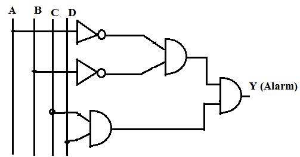
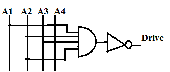
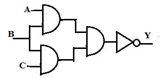
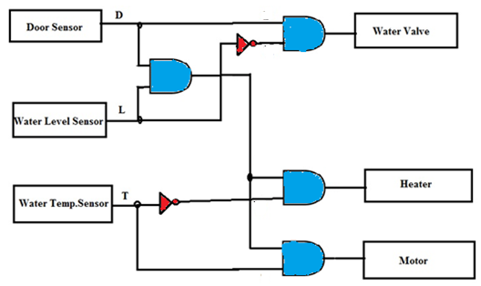

Q1. A combinational logic circuit in a washing machine is used to activate an alarm when its output Y goes HIGH. What inputs are required at ABCD to assert the alarm output?

A
A=B=C=D=1
B
A=D=1,B=C=0
C
A=C=0,B=D=1
D
A=B=0,C=D=1
Ans is D
Q.2 The following AND-NOT circuit is used as a part of a drive spindle motor. The circuit is designed such that the motor turns ON when Drive= 1. Determine the input conditions necessary to turn ON the motor.

A
A1=A2=A3=A4=1
B
A1=A2=A3=A4=0
C
A1=A2= 0; A3=A4=1
D
Both B and C
Ans is D
Q3. Which of the following statements best describes the working of the following circuit?

A
A HIGH output occurs when all three inputs are LOW.
B
A HIGH output occurs when even a single input is LOW.
C
A HIGH output occurs when all three inputs are HIGH.
D
Options A and B are TRUE.
Ans is D
Q4. A demo model of washing machine operations is shown below. Analyze and state the output expression for water valve operation.

A
Output = D.L.T
B
Output = D.L.T'
C
Output = D.L'
D
Output = D'.L
Ans is C
Q 5. Refer Q4 above and state what output is necessary to activate the Heater.
A
Output = D.L.T.
B
Output = D.L.T'
C
Output = D.L'.
D
Output = D'.L
Ans is B